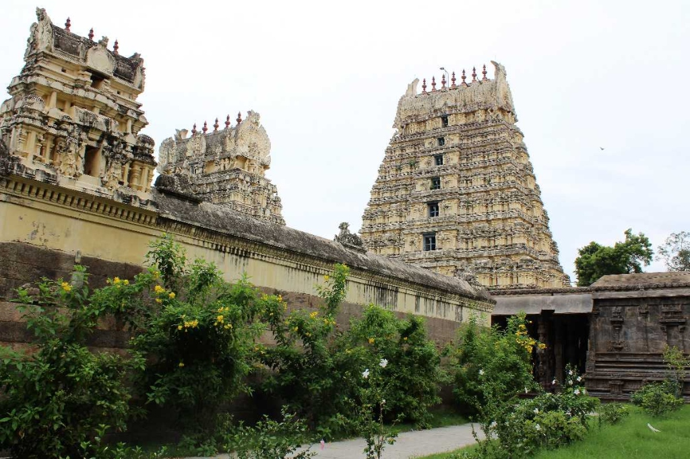
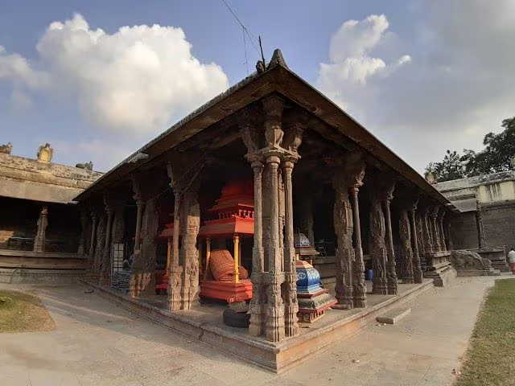
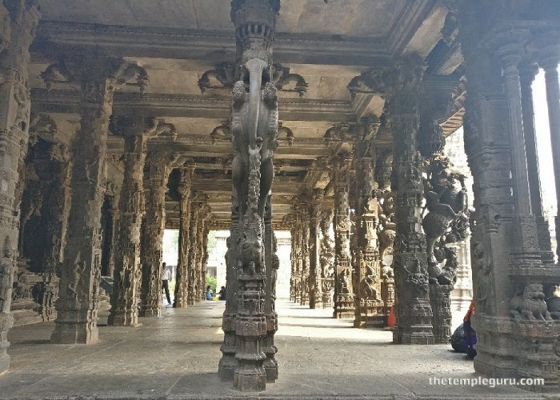
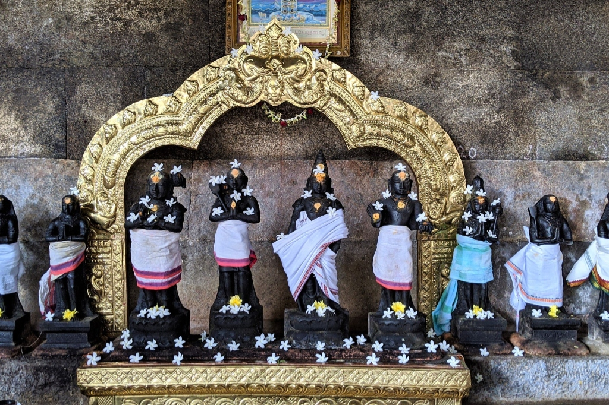

Jalakandeswarar Temple
Jalakandeswarar Temple is a magnificent Hindu temple dedicated to Lord Shiva, located right inside the historic Vellore Fort. Renowned for its exquisite Vijayanagara architecture, the temple is an architectural marvel that continues to awe visitors with its incredibly detailed stone carvings.
The name "Jalakandeswarar" translates to "Lord Shiva residing in the water," derived from the fact that the temple's main sanctum is surrounded by a moat-like structure that naturally collects water. Legend has it that a giant ant-hill previously existed at this location in the midst of the water, where a Swayambhu (self-manifested) Shiva Lingam was discovered.
One of the most striking features of the temple is the intricately carved Kalyana Mandapam (marriage hall). The pillars of this hall are adorned with masterful carvings of deities, mythical beasts (Yalis), warriors riding horses, and fascinating scenes from Hindu mythology. The sheer craftsmanship displayed on these solid granite pillars is considered to be some of the finest in all of South India.
Despite surviving numerous sieges and the changing hands of power within the Vellore Fort�from the Nayaks to the Bijapur Sultans, Marathas, Nawabs, and eventually the British�the temple has remarkably preserved its spiritual sanctity and architectural grandeur. Today, it remains a vibrant place of worship and a must-visit destination for history buffs and devotees alike.
How to Reach Jalakandeswarar Temple
- 🚌 By Bus: Frequent local buses and autos are available from Vellore Old and New Bus Stands.
- 🚆 By Train: Nearest railway station is Vellore Town (VLR) at 2 km, or Katpadi Junction (KPD) at 7 km.
- 🚕 By Taxi: Easily accessible by taxi or auto-rickshaw from any part of the city.




